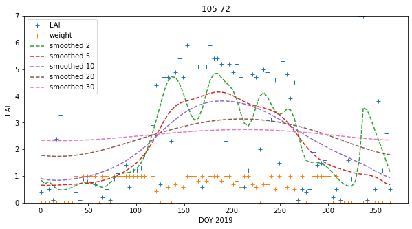
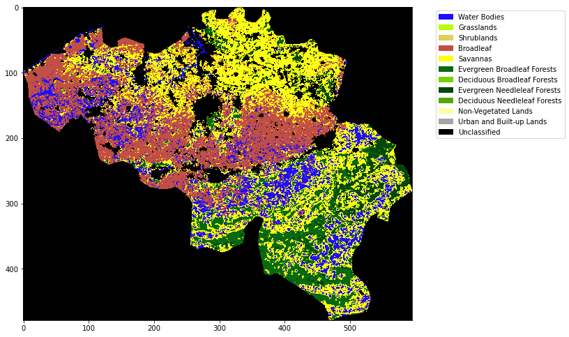

043 Weighted interpolation : Answers to exercises
Exercise 1
- Write a function
get_weightthat takes as argument:lai : MODIS LAI dataset std : MODIS LAI uncertainty dataset
and returns an array the same shape as lai/std of per-pixel pixel weights * Read a MODIS LAI dataset, calculate the weights, and print some statistics of the weights
# ANSWER
'''
a function `get_weight` that takes as argument:
lai : MODIS LAI dataset
std : MODIS LAI uncertainty dataset
'''
def get_weight(lai,std):
std[std<1] = 1
weight = np.zeros_like(std)
mask = (std > 0)
weight[mask] = 1./(std[mask]**2)
weight[lai > 10] = 0.
return weight
# ANSWER
from geog0111.get_lai_data import get_lai_data
# load some data
tile = ['h17v03','h18v03','h17v04','h18v04']
year = 2019
fips = "LU"
lai,std,doy = get_lai_data(year,tile,fips)
weight = get_weight(lai,std)
print(f'weight min: {weight.min()}')
print(f'weight max: {weight.max()}')
print(f'weight mean: {weight.mean()}')
print(f'weight median: {np.median(weight)}')
print(f'weight sum: {weight.sum()}')
weight min: 0.0
weight max: 1.0
weight mean: 0.3184627847952631
weight median: 0.0016259105098855356
weight sum: 625524.6018948557
Exercise 2
- Write a function
regularisethat takes as argument:lai : MODIS LAI dataset weight : MODIS LAI weight sigma : Gaussian filter width
and returns an array the same shape as lai of regularised LAI * Read a MODIS LAI dataset and regularise it * Plot original LAI, and regularised LAI for varying values of sigma, for one pixel
Hint: You will find such a function useful when completing Part B of the assessed practical, so it is well worth your while doing this exercise.
# ANSWER
import numpy as np
import scipy
import scipy.ndimage.filters
# regularise
def regularise(lai,weight,sigma):
'''
takes as argument:
lai : MODIS LAI dataset: shape (Nt,Nx,Ny)
weight : MODIS LAI weight: shape (Nt,Nx,Ny)
sigma : Gaussian filter width: float
returns an array the same shape as
lai of regularised LAI. Regularisation takes place along
axis 0 (the time axis)
'''
x = np.arange(-3*sigma,3*sigma+1)
gaussian = np.exp((-(x/sigma)**2)/2.0)
numerator = scipy.ndimage.filters.convolve1d(lai * weight, gaussian, axis=0,mode='wrap')
denominator = scipy.ndimage.filters.convolve1d(weight, gaussian, axis=0,mode='wrap')
# avoid divide by 0 problems by setting zero values
# of the denominator to not a number (NaN)
denominator[denominator==0] = np.nan
interpolated_lai = numerator/denominator
# (Nt,Nx,Ny)
return interpolated_lai
# Read a MODIS LAI dataset and regularise it
import numpy as np
from geog0111.get_lai_data import get_lai_data
from geog0111.get_weight import get_weight
# load some data
tile = ['h17v03','h18v03','h17v04','h18v04']
year = 2019
fips = "LU"
sigma = 5
lai,std,doy = get_lai_data(year,tile,fips)
weight = get_weight(lai,std)
# make a dictionary
interpolated_lai = {}
for sigma in [2,5,10,20,30]:
interpolated_lai[sigma] = regularise(lai,weight,sigma)
import matplotlib.pyplot as plt
p0,p1 = 105,72
x_size,y_size=(10,5)
fig, axs = plt.subplots(1,1,figsize=(x_size,y_size))
x = doy
axs.plot(x,lai[:,p0,p1],'+',label='LAI')
axs.plot(x,weight[:,p0,p1],'+',label='weight')
axs.set_title(f'{p0} {p1}')
# ensure the same scale for all
axs.set_ylim(0,7)
axs.set_xlabel('DOY 2019')
axs.set_ylabel('LAI')
for sigma in [2,5,10,20,30]:
axs.plot(x,interpolated_lai[sigma][:,p0,p1],'--',label=f'smoothed {sigma}')
axs.legend(loc='best')
<matplotlib.legend.Legend at 0x7fba607c5690>

Exercise 3
- Write a function
get_lcthat takes as argument:year : int tile : list of MODIS tiles, list of st fips : country FIPS code, str
and returns a byte array of land cover type LC_Type3 for the year and country specified
* In your function, print out the unique values in the landcover dataset to give some feedback to the user
* Write a function plot_LC_Type3 that will plot LC_Type3 data with an appropriate colourmap.
* Produce a plot of the land cover of Belgium for 2018
# ANSWER
from geog0111.modis import Modis
import gdal
import numpy as np
def get_lc(year,tile,fips):
'''
Return LC mask for year,tile,fips
'''
kwargs = {
'tile' : tile,
'product' : 'MCD12Q1',
}
doy = 1
# get the LC data
modis = Modis(**kwargs)
warp_args = {
'dstNodata' : 255,
'format' : 'MEM',
'cropToCutline' : True,
'cutlineWhere' : f"FIPS='{fips}'",
'cutlineDSName' : 'data/TM_WORLD_BORDERS-0.3.shp'
}
# specify day of year (DOY) and year
lcfiles = modis.get_modis(year,doy,warp_args=warp_args)
# get the item we want
g = gdal.Open(lcfiles['LC_Type3'])
# error checking
if not g:
print(f"cannot open LC file {lcfiles['LC_Type3']}")
return None
lc = g.ReadAsArray()
del g
# in your function, print out the unique values in the
# landcover dataset to give some feedback to the user
print(f"class codes: {np.unique(lc)}")
return lc
# ANSWER
import matplotlib.pyplot as plt
import matplotlib
import matplotlib.patches
import pandas as pd
def plot_LC_Type3(land_cover):
# read the colour data
lc_Type3 = pd.read_csv('data/LC_Type3_colour.csv')
# set up cmap and norm for colour scale
cmap = matplotlib.colors.\
ListedColormap(list(lc_Type3['colour']))
norm = matplotlib.colors.\
BoundaryNorm(list(lc_Type3['code']), len(lc_Type3['code']))
# set up the legend
legend_labels = dict(zip(list(lc_Type3['colour']),list(lc_Type3['class'])))
patches = [matplotlib.patches.Patch(color=c, label=l)
for c,l in legend_labels.items()]
x_size,y_size=(10,10)
fig, axs = plt.subplots(1,figsize=(x_size,y_size))
im = axs.imshow(land_cover,cmap=cmap,norm=norm,interpolation='nearest')
plt.legend(handles=patches,
bbox_to_anchor=(1.4, 1),
facecolor="white")
# Produce a plot of the land cover of Belgium for 2018
# ANSWER
year = 2018
fips = "BE"
tile = ['h17v03', 'h18v03','h17v04', 'h18v04']
lc = get_lc(year,tile,fips)
plot_LC_Type3(lc)
class codes: [ 0 1 3 4 5 6 7 9 10 255]
